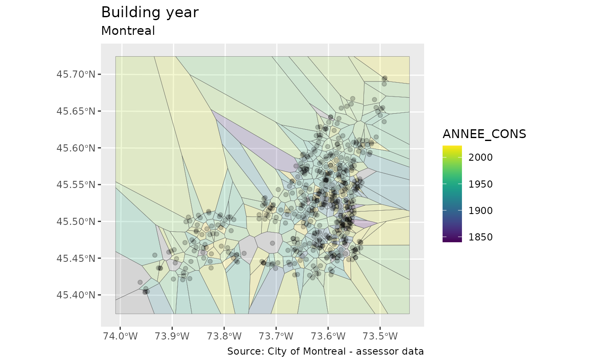

voronoi.Rmd
library(SfSpHelpers)
#> Warning: replacing previous import 'MASS::select' by 'dplyr::select' when
#> loading 'SfSpHelpers'
#> Warning: replacing previous import 'curl::handle_reset' by 'httr::handle_reset'
#> when loading 'SfSpHelpers'
#> Warning: replacing previous import 'dplyr::union' by 'raster::union' when
#> loading 'SfSpHelpers'
#> Warning: replacing previous import 'MASS::area' by 'raster::area' when loading
#> 'SfSpHelpers'
#> Warning: replacing previous import 'dplyr::select' by 'raster::select' when
#> loading 'SfSpHelpers'
#> Warning: replacing previous import 'glue::trim' by 'raster::trim' when loading
#> 'SfSpHelpers'
#> Warning: replacing previous import 'dplyr::intersect' by 'raster::intersect'
#> when loading 'SfSpHelpers'
#> Warning: replacing previous import 'dplyr::setdiff' by 'rgeos::setdiff' when
#> loading 'SfSpHelpers'
#> Warning: replacing previous import 'raster::select' by 'dplyr::select' when
#> loading 'SfSpHelpers'
library(dplyr)
library(ggplot2)
shpBuildings <- cache_csv_sf_wrapper('eval_fonciere_mtl',
fun = get_zipped_remote_shapefile,
url = 'https://data.montreal.ca/dataset/4ad6baea-4d2c-460f-a8bf-5d000db498f7/resource/43c2cccf-a439-429b-a3c8-5d4ebce53e1b/download/uniteevaluationfonciere.zip',
id_name='ID_UEV')
#> [1] "Using default cache: /home/charles/.cache ..."
#> Reading layer `eval_fonciere_mtl' from data source
#> `/home/charles/.cache/eval_fonciere_mtl.shp' using driver `ESRI Shapefile'
#> Simple feature collection with 499864 features and 1 field
#> Geometry type: MULTIPOLYGON
#> Dimension: XY
#> Bounding box: xmin: 267585.6 ymin: 5029232 xmax: 306671.1 ymax: 5062643
#> Projected CRS: NAD83 / MTM zone 8
#> Reading existing csv:
#> /home/charles/.cache/eval_fonciere_mtl.csv
#> /home/charles/.cache/eval_fonciere_mtl.shp...
#Sample
shpBuildings %<>% sample_frac(size=0.001)
#Clean up
shpBuildings %<>% mutate( ANNEE_CONS = plyr::mapvalues(ANNEE_CONS, from=9999, to=NA) )
shpVoronoi <- getVoronoiInterpolation(shpBuildings, 'ANNEE_CONS')
#> Warning in st_centroid.sf(shp): st_centroid assumes attributes are constant over
#> geometries of x
#> Warning: The `x` argument of `as_tibble.matrix()` must have unique column names if `.name_repair` is omitted as of tibble 2.0.0.
#> Using compatibility `.name_repair`.
#> This warning is displayed once every 8 hours.
#> Call `lifecycle::last_lifecycle_warnings()` to see where this warning was generated.
#> Loading required package: sp
#> Loading required package: deldir
#> deldir 1.0-6 Nickname: "Mendacious Cosmonaut"
#>
#> The syntax of deldir() has had an important change.
#> The arguments have been re-ordered (the first three
#> are now "x, y, z") and some arguments have been
#> eliminated. The handling of the z ("tags")
#> argument has been improved.
#>
#> The "dummy points" facility has been removed.
#> This facility was a historical artefact, was really
#> of no use to anyone, and had hung around much too
#> long. Since there are no longer any "dummy points",
#> the structure of the value returned by deldir() has
#> changed slightly. The arguments of plot.deldir()
#> have been adjusted accordingly; e.g. the character
#> string "wpoints" ("which points") has been
#> replaced by the logical scalar "showpoints".
#> The user should consult the help files.
#> Warning in sp::proj4string(shp %>% sf::as_Spatial()): CRS object has comment, which is lost in output; in tests, see
#> https://cran.r-project.org/web/packages/sp/vignettes/CRS_warnings.html
#> Warning: attribute variables are assumed to be spatially constant throughout all
#> geometries
#> Warning! there are 2 missing voronoi cells
ggplot() +
geom_sf(data=shpVoronoi, aes(fill=ANNEE_CONS), alpha=0.2, , lwd=0.1) +
geom_sf(data=shpBuildings %>% sf::st_centroid(), lwd=0.2, alpha=0.2) +
viridis::scale_fill_viridis() +
ggtitle('Building year') +
labs(subtitle="Montreal",
caption = 'Source: City of Montreal - assessor data')
#> Warning in st_centroid.sf(.): st_centroid assumes attributes are constant over
#> geometries of x